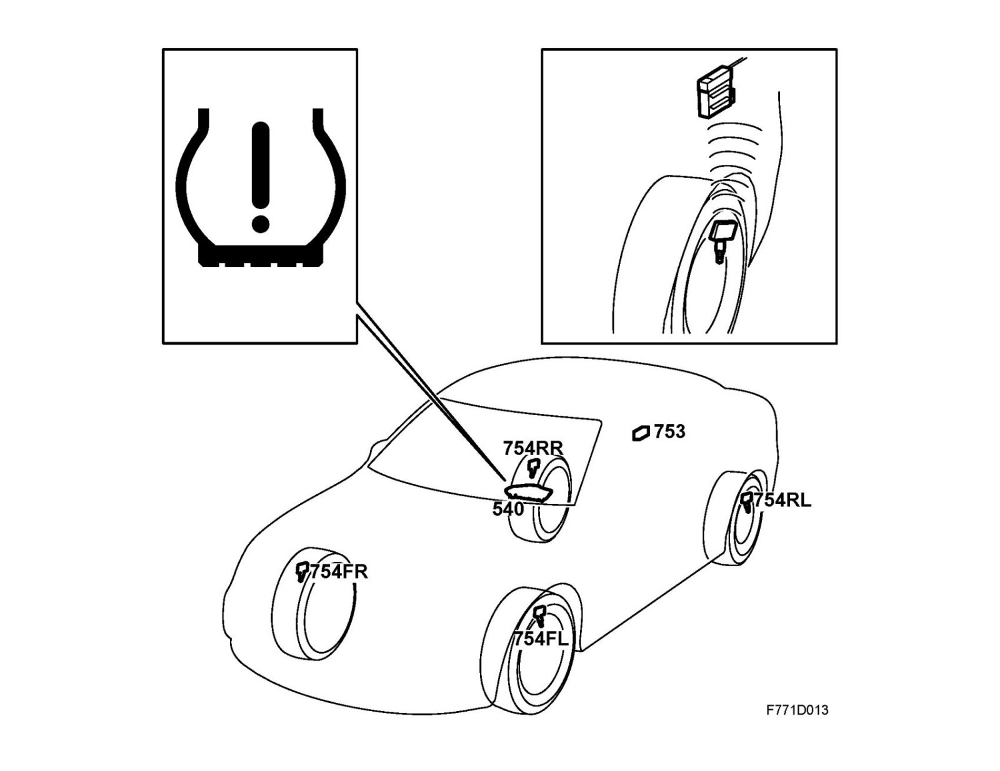

Tire Pressure Monitoring System (TPMS), Brief Description
Tire pressure monitoring system (TPMS), brief descriptionWarning
The system is designed as an aid to the driver. The driver is always responsible for ensuring that the tires have the right pressure.
For the best possible safety, economy and comfort, tire pressure should be checked regularly, even if the tire pressure monitoring system has not issued an alarm.
Overview

Tire Pressure Monitoring Module (753)
Pressure sensor, tire pressure (754)
MIU (540)
Function
The tire pressure monitoring system (TPMS) warns the driver of low pressure in one or more tires.
The tire pressure monitoring system works automatically to monitor the pressure of all four tires. The system is activated at speeds exceeding 20 km/h.
Four pressure sensors gauge tire pressure and transmit the values via radio waves to the control module, which is located in the luggage compartment.
The pressure sensor is mounted in the rim and serves as a valve, sensor and radio transmitter.
The control listens for information during the first few minutes to detect the position of each tire pressure sensor. The system is self-teaching, which means that it is possible to move the wheels without having to recalibrate the control module.
Information on incorrect tire pressure is transmitted on the I-bus. A warning/alarm message is then shown in the main instrument display.